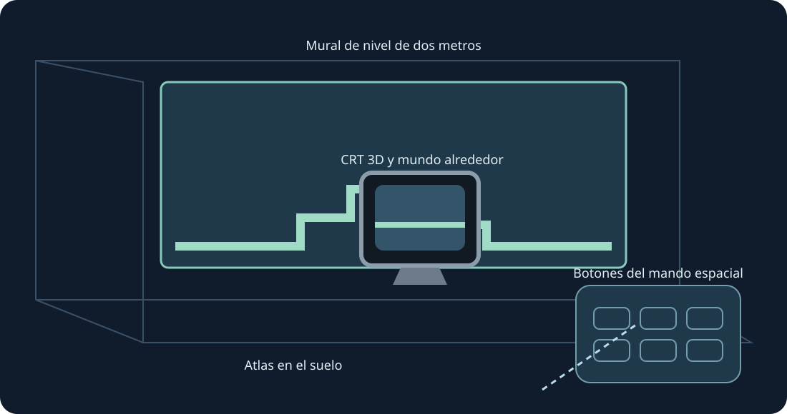

Muros del nivel, suelo, mesas arcade, CRT y galerías curvas. Vista XR experimental; usa ambas empuñaduras para cambiar tamaño.
Vista XR experimental. El usuario confirmó la colección 0.4 visible en Quest 3 tras instalarla; se registró el envío de fotogramas. La versión 0.5 se compila y verifica aparte. Seguimiento, comodidad, passthrough, colocación y juego prolongado necesitan pruebas físicas.
Para probar más tarde, activa el modo desarrollador e instala el APK ARM64 público con SideQuest o adb install -r. Abre Mario Compilation Ultra XR en Fuentes desconocidas, elige un cartucho o ZIP con el selector y pulsa Jugar. Importa All-Stars + World y Yoshi’s Island por separado. El APK público no contiene ROMs ni progreso.
Elige el nivel, CRT nativo, mando u opciones como objetivo. Una empuñadura mueve y gira; ambas cambian el tamaño aun con la posición bloqueada. El mando ofrece ajustes precisos y mitad/doble/restablecer. Recuperar acerca la interfaz. Y abre opciones; la página Jugar incluye todos los botones SNES.
Pellizca y arrastra la palanca; usa la otra mano para los botones. Pellizca con el dedo medio para agarrar. Si se pierde el seguimiento, se sueltan los controles.
Una instalación nueva solicita 90 Hz y un mural AR transparente de dos metros. Si no está disponible se usa otra frecuencia; la simulación conserva su ritmo. Permisos de escena/anclas y escaneo son opcionales para paredes automáticas. Hay colocación manual y calibración del suelo. El runtime compone passthrough; la app no solicita Internet, micrófono ni imágenes de cámara.
Las imágenes fantasma informan y no simulan objetos lejanos. Las posiciones verificadas pueden mostrarse al entrar; las imágenes aprendidas proceden de tu juego local.
La mesa arcade muestra el área cargada. Se conservan la física y la activación de objetos del cartucho.
Controles rápidos en PC: mantén pulsado el stick derecho; cruceta izquierda/derecha cambia zoom, arriba 1:1, abajo mapa completo, A fija, B cámara original, X captura, Y sigue al jugador. Al soltar vuelven los controles SNES. F1 o ayuda Y del menú abre la explicación ilustrada.
SNES: D-pad · A · B · X · Y · L · R · Start · Select
Touch: A → SNES B · B → SNES Y · X → SNES A · RT → SNES X · R3 → Start · LT → Rewind · Y → Mover opciones
Parity · Validation